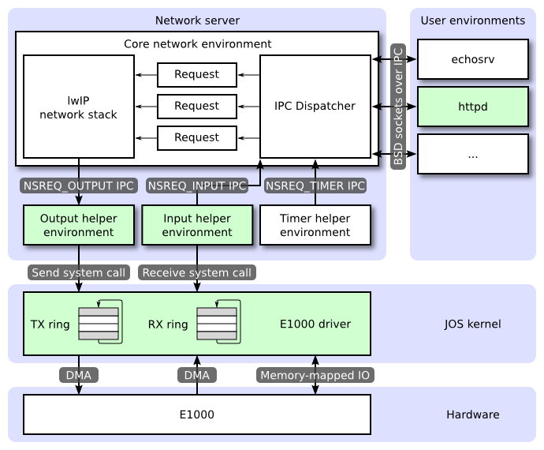
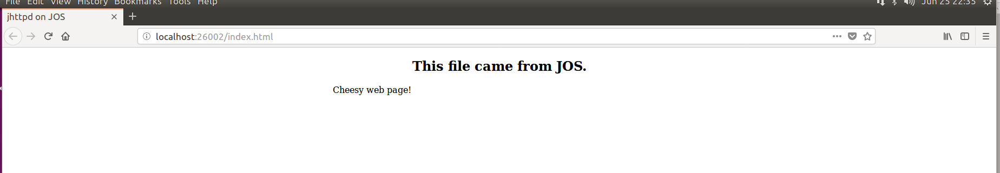

Created: June 24 2018 22:47:00Last Updated: Jun 25 2018 22:56:01
Lab 6 Report
- The Network Server
- The Core Network Server Environment
- The Output Environment
- The Input Environment
- The Timer Environment & Exercise 1
- PCI Interface & Exercise 3
- Memory-mapped I/O & Exercise 4
- DMA
- Transmitting Packets
- Receiving Packets
- The Web Server & Exercise 13
- Code for Lab 6
- Grade
The Network Server
JOS utilizes lwIP, an open source lightweight TCP/IP protocol suite that includes a network stack. In this lab, we treat lwIP as a black box that implements a BSD socket interface and has a packet input port and packet output port.
The network server of JOS is a combination of four enviroments:
- core network server environment (includes socket call dispatcher and lwIP)
- input environment
- output environment
- timer environment
The following diagram shows these different environments and their relationships.

The Core Network Server Environment
The core network server environment is composed of the socket call dispatcher and lwIP itself. The socket call dispatcher works exactly like the file server. User environments use stubs (found in lib/nsipc.c) to send IPC messages to the core network environment. In lib/nsipc.c we find the core network server the same way we found the file server: i386_init created the NS environment with NS_TYPE_NS, so we scan envs, looking for this special environment type. For each user environment IPC, the dispatcher in the network server calls the appropriate BSD socket interface function provided by lwIP on behalf of the user.
Regular user environments use the functions in lib/sockets.c, which provides a file descriptor-based sockets API, instead of use the nsipc_* calls directly. User environments refer to sockets via file descriptors. A number of operations (connect, accept, etc.) are specific to sockets, but read, write, and close go through the normal file descriptor device-dispatch code in lib/fd.c. Much like the file server, lwIP also generates unique ID’s for all open sockets. In both the file server and the network server, JOS use information stored in struct Fd to map per-environment file descriptors to these unique ID spaces.
Despite of the similarities of the IPC dispatchers of the file server and network server, there is a key difference. BSD socket calls like accept and recv can block indefinitely. If the dispatcher were to let lwIP execute one of these blocking calls, the dispatcher would also block and there could only be one outstanding network call at a time for the whole system. Since this is unacceptable, the network server uses user-level threading to avoid blocking the entire server environment. For every incoming IPC message, the dispatcher creates a thread and processes the request in the newly created thread. If the thread blocks, then only that thread is put to sleep while other threads continue to run.
In addition to the core network environment there are three helper environments. Besides accepting messages from user applications, the core network environment’s dispatcher also accepts messages from the input and timer environments.
The Output Environment
When servicing user environment socket calls, lwIP will generate packets for the network card to transmit. LwIP will send each packet to be transmitted to the output helper environment using the NSREQ_OUTPUT IPC message with the packet attached in the page argument of the IPC message. The output environment is responsible for accepting these messages and forwarding the packet on to the device driver via the system call interface that you will soon create.
The Input Environment
Packets received by the network card need to be injected into lwIP. For every packet received by the device driver, the input environment pulls the packet out of kernel space and sends the packet to the core server environment using the NSREQ_INPUT IPC message.
The packet input functionality is separated from the core network environment because JOS makes it hard to simultaneously accept IPC messages and poll or wait for a packet from the device driver. We do not have a select system call in JOS that would allow environments to monitor multiple input sources to identify which input is ready to be processed.
The Timer Environment & Exercise 1
The timer environment periodically sends messages of type NSREQ_TIMER to the core network server notifying it that a timer has expired. The timer messages from this thread are used by lwIP to implement various network timeouts.
Add a call to
time_tickfor every clock interrupt inkern/trap.c. Implementsys_time_msecand add it to syscall inkern/syscall.cso that user space has access to the time.
To finish this exercise, we need to add a call to time_tick in trap_dispatch and a call to sys_time_mesc in syscall, which is easy. Sine JOS uses a big kernel lock, we don’t need to worry about the race on kern/time.c/ticks.
PCI Interface & Exercise 3
The E1000 is a PCI device, which means it plugs into the PCI bus on the motherboard. The PCI bus has address, data, and interrupt lines, and allows the CPU to communicate with PCI devices and PCI devices to read and write memory. A PCI device needs to be discovered and initialized before it can be used. Discovery is the process of walking the PCI bus looking for attached devices. Initialization is the process of allocating I/O and memory space as well as negotiating the IRQ line for the device to use.
To perform PCI initialization during boot, the PCI code walks the PCI bus looking for devices. When it finds a device, it reads its vendor ID and device ID and uses these two values as a key to search the pci_attach_vendor array. The array is composed of struct pci_driver entries like this:
struct pci_driver { uint32_t key1, key2; int (*attachfn) (struct pci_func *pcif); };
If the discovered device’s vendor ID and device ID match an entry in the array, the PCI code calls that entry’s attachfn to perform device initialization. (Devices can also be identified by class, which is what the other driver table in kern/pci.c is for.)
The attach function is passed a PCI function to initialize. A PCI card can expose multiple functions, though the E1000 exposes only one. Here is how we represent a PCI function in JOS:
struct pci_func { struct pci_bus *bus; uint32_t dev; uint32_t func; uint32_t dev_id; uint32_t dev_class; uint32_t reg_base[6]; uint32_t reg_size[6]; uint8_t irq_line; };
The above structure reflects some of the entries found in Table 4-1 of Section 4.1 of the developer manual. The last three entries of struct pci_func are of particular interest to us, as they record the negotiated memory, I/O, and interrupt resources for the device. The reg_base and reg_size arrays contain information for up to six Base Address Registers or BARs. reg_base stores the base memory addresses for memory-mapped I/O regions (or base I/O ports for I/O port resources), reg_size contains the size in bytes or number of I/O ports for the corresponding base values from reg_base, and irq_line contains the IRQ line assigned to the device for interrupts. The specific meanings of the E1000 BARs are given in the second half of table 4-2.
When the attach function of a device is called, the device has been found but not yet enabled. This means that the PCI code has not yet determined the resources allocated to the device, such as address space and an IRQ line, and, thus, the last three elements of the struct pci_func structure are not yet filled in. The attach function should call pci_func_enable, which will enable the device, negotiate these resources, and fill in the struct pci_func.
Implement an attach function to initialize the E1000. Add an entry to the
pci_attach_vendorarray inkern/pci.cto trigger your function if a matching PCI device is found (be sure to put it before the {0, 0, 0} entry that mark the end of the table). You can find the vendor ID and device ID of the 82540EM that QEMU emulates in section 5.2. You should also see these listed when JOS scans the PCI bus while booting.For now, just enable the E1000 device via
pci_func_enable. We’ll add more initialization throughout the lab.
We have provided thekern/e1000.candkern/e1000.hfiles for you so that you do not need to mess with the build system. They are currently blank; you need to fill them in for this exercise. You may also need to include the e1000.h file in other places in the kernel.When you boot your kernel, you should see it print that the PCI function of the E1000 card was enabled. Your code should now pass the pci attach test of make grade.
According to the manual, the vendor ID of E1000 is 0x8086 and the dev ID of E1000 is 0x100E. We defined a funtion named e1000_attach in kern/e1000.c and called pci_func_enable from it. The function returns 0 on success. At last, we add a new entry in the pci_func_enable array.
Memory-mapped I/O & Exercise 4
Software communicates with the E1000 via memory-mapped I/O (MMIO). pci_func_enable negotiates an MMIO region with the E1000 and stores its base and size in BAR 0 (that is, reg_base[0] and reg_size[0]). This is a range of physical memory addresses assigned to the device, which means JOS havs to do something to access it via virtual addresses. Since MMIO regions are assigned very high physical addresses (typically above 3GB), we can’t use KADDR to access it because of JOS’s 256MB limit. Thus, we have to create a new memory mapping. We’ll use the area above MMIOBASE (using mmio_map_region from lab 4 will make sure we don’t overwrite the mapping used by the LAPIC). Since PCI device initialization happens before JOS creates user environments, we can create the mapping in kern_pgdir and it will always be available.
In your attach function, create a virtual memory mapping for the E1000’s BAR 0 by calling
mmio_map_region(which you wrote in lab 4 to support memory-mapping the LAPIC).You’ll want to record the location of this mapping in a variable so you can later access the registers you just mapped. Take a look at the lapic variable in
kern/lapic.cfor an example of one way to do this. If you do use a pointer to the device register mapping, be sure to declare it volatile; otherwise, the compiler is allowed to cache values and reorder accesses to this memory.To test your mapping, try printing out the device status register (section 13.4.2). This is a 4 byte register that starts at byte 8 of the register space. You should get 0x80080783, which indicates a full duplex link is up at 1000 MB/s, among other things.
We invoke mmio_map_region from e1000.c/e1000_attach after we invoked pci_func_enable. The starting physical address and space size are stored in pcif->reg_base[0] and pcif->reg_size[0]. The returned virtual address is stored in e1000, a global variable defined in kern/e1000.c with the type of volatile uint32_t.
To test our mapping, we read the device status register using e1000 and print out the result of comparision.
DMA
The E1000 uses Direct Memory Access or DMA to read and write packet data directly from memory without involving the CPU. The driver is responsible for allocating memory for the transmit and receive queues, setting up DMA descriptors, and configuring the E1000 with the location of these queues, but everything after that is asynchronous. To transmit a packet, the driver copies it into the next DMA descriptor in the transmit queue and informs the E1000 that another packet is available; the E1000 will copy the data out of the descriptor when there is time to send the packet. Likewise, when the E1000 receives a packet, it copies it into the next DMA descriptor in the receive queue, which the driver can read from at its next opportunity.
The receive and transmit queues are very similar at a high level. Both consist of a sequence of descriptors. While the exact structure of these descriptors varies, each descriptor contains some flags and the physical address of a buffer containing packet data (either packet data for the card to send, or a buffer allocated by the OS for the card to write a received packet to).
The queues are implemented as circular arrays, meaning that when the card or the driver reach the end of the array, it wraps back around to the beginning. Both have a head pointer and a tail pointer and the contents of the queue are the descriptors between these two pointers. The hardware always consumes descriptors from the head and moves the head pointer, while the driver always add descriptors to the tail and moves the tail pointer. The descriptors in the transmit queue represent packets waiting to be sent (hence, in the steady state, the transmit queue is empty). For the receive queue, the descriptors in the queue are free descriptors that the card can receive packets into (hence, in the steady state, the receive queue consists of all available receive descriptors). The pointers to these arrays as well as the addresses of the packet buffers in the descriptors must all be physical addresses because hardware performs DMA directly to and from physical RAM without going through the MMU.
Transmitting Packets
The transmit and receive functions of the E1000 are basically independent of each other, so we can work on one at a time. We’ll attack transmitting packets first.
First, we have to initialize the card to transmit, following the steps described in section 14.5. The first step of transmit initialization is setting up the transmit queue. The precise structure of the queue is described in section 3.4 and the structure of the descriptors is described in section 3.3.3. We won’t be using the TCP offload features of the E1000, so we can focus on the “legacy transmit descriptor format.”
We use C structs to describe the E1000’s structures, as what we’ve done with the struct Trapframe. The legacy transmit descriptor given in table 3-8 of the manual looks like the diagram below:
![]()
The first byte of the structure starts at the top right, so to convert this into a C struct, we read from right to left, top to bottom. Hence we define our transmit descriptor structure as the following.
/* Transmit Descriptor */ struct e1000_tx_desc { uint64_t addr; /* Address of the descriptor's data buffer */ uint16_t length; /* Data buffer length */ uint8_t cso; /* Checksum offset */ uint8_t cmd; /* Descriptor control */ uint8_t status; /* Descriptor status */ uint8_t css; /* Checksum start */ uint16_t special; }__attribute__((packed));
Our network driver will have to reserve memory for the transmit descriptor array and the packet buffers pointed to by the transmit descriptors. In addition, the E1000 accesses physical memory directly, which means any buffer it accesses must be contiguous in physical memory. There are several ways to do this, ranging from dynamically allocating pages to simply declaring them in global variables. There are also multiple ways to handle the packet buffers.
To keep things simple, we declare our descriptor array and buffer array in global variables, reserving space for a packet buffer for each discriptor during driver initialization. The maximum size of an Ethernet packet is 1518 bytes, which bounds how big these buffers need to be.
Exercise 5
Perform the initialization steps described in section 14.5 (but not its subsections). Use section 13 as a reference for the registers the initialization process refers to and sections 3.3.3 and 3.4 for reference to the transmit descriptors and transmit descriptor array.
Be mindful of the alignment requirements on the transmit descriptor array and the restrictions on length of this array. Since
TDLENmust be 128-byte aligned and each transmit descriptor is 16 bytes, your transmit descriptor array will need some multiple of 8 transmit descriptors. However, don’t use more than 64 descriptors or our tests won’t be able to test transmit ring overflow.For the TCTL.COLD, you can assume full-duplex operation. For TIPG, refer to the default values described in table 13-77 of section 13.4.34 for the IEEE 802.3 standard IPG (don’t use the values in the table in section 14.5).
According to the manual, we first static_assert the tx_desc array is 128-byte aligned, static_assert(sizeof(tx_descs) % 128 == 0); // should be 128-byte aligned.
Then we program the Transmit Descriptor Base Address (TDBAL) register with the address of the region (PADDR(tx_descs)). Since we use a 32-bit CPU, we don’t need to configure TDBAH. Next we set the Transmit Descriptor Length (TDLEN) register to the size of (in bytes) of the descriptor ring (sizeof(tx_descs)), which must be 128-byte aligned.
The Transmit Descriptor Head and Tail (TDH/TDT) register are initialized (by hardware) to 0b after a power-on or a software initiated Ethernet controller reset. We write 0b to both these registers to ensure this.
Initialize the Transmit Control Register (TCTL) for desired operation to include the the following:
- Set the Enable (TCTL.EN) bit to 1b for normal operation.
- Set the Pad short Packets (TCTL.PSP) bit to 1b.
- Configure the Collision Threshold (TCTL.CT) to the desired value. We chose 10h.
- Configure the Collision Distance (TCTL.COLD) to its expected value. We chose 40h for full duplex.
Program the Transmit IPG (TIPG) Register with 0x0060200a (for details refer to subsection 13.4.34).
Besides these control registers, we also need to initialize transmit descriptors. We need to initialize the addr field in the descriptor to their corresponding pre-allocated buffer, toggle on the E1000_TXD_CMD_RS bit in cmd field so that E1000 will toggle on the E1000_TXD_STA_DD in status field indicating the descriptor can be reused. Finally we toggle on the E1000_TXD_STA_DD manually in our initialization.
Exercise 6
Write a function to transmit a packet by checking that the next descriptor is free, copying the packet data into the next descriptor, and updating TDT. Make sure you handle the transmit queue being full.
We define a new function named e1000_tx to send packets. The procedure follows the steps described below:
- It’s the system call’s duty to ensure the sanity of memory space passed to
e1000_tx, so we don’t check it again ine1000_tx. - To keep things simple, we don’t allow package to reside at multiple descriptors. So the
lengthshould not be larger thanMAXPKTLEN. Otherwise we return-E_INVAL. - We read
tailfrome1000[E1000_TDT]and check theDDbit intx_descs[tail].status. If the bit is not set, then the descriptor array is full, we return-E_TXD_ARRAY_FULL. - Copy data from
void *addrto the buffer of tail descriptor. - Configure the
tx_descs[tail].lengthwithlengthpassed toe1000_tx. - Unset the DD bit of tx_descs[tail].status。
- Set the EOP bit in
tx_descs[tail].cmd, indicating this is the end of a package. - Update
e1000[E1000_TDT]with(tail + 1) % NTDESC
Now would be a good time to test your packet transmit code. Try transmitting just a few packets by directly calling your transmit function from the kernel. You don’t have to create packets that conform to any particular network protocol in order to test this. Run make E1000_DEBUG=TXERR,TX qemu to run your test.
I add a simple test in e1000_attach. To ensure e1000_tx works fine, we can use tcpdump -XXnr qemu.pcap to check packages sent.
#if TEST_TX char int_packet[200]; for (size_t i = 0; i < 200; ++i) int_packet[i] = i; for (size_t i = 0; i < 2 * NTDESC; ++i) { cprintf("transmit packet %d, length: %d\n", i, sizeof(int_packet)); int_packet[0] = i; e1000_tx(int_packet, sizeof(int_packet)); } #endif
Exercise 7
Add a system call that lets you transmit packets from user space. The exact interface is up to you. Don’t forget to check any pointers passed to the kernel from user space.
I allocated a new system call number SYS_net_transmit and define the corresponding function sys_net_transmit. In this function we first check the sanity of the memory space passed to kernel and then invoke e1000_tx, return the value returned by e1000_tx.
static int sys_net_transmit(void *addr, size_t length) { // Check that the user has permission to read memory [s, s+len). // Destroy the environment if not. user_mem_assert(curenv, addr, length, PTE_P | PTE_U); // e1000_rx will check the sanity of length return e1000_tx(addr, length); }
Transmitting Packets: Network Server & Exercise 8
Implement
net/output.c.
Question
- How did you structure your transmit implementation? In particular, what do you do if the transmit ring is full?
The output helper environment’s goal is to do the following in a loop: accept NSREQ_OUTPUT IPC messages from the core network server and send the packets accompanying these IPC message to the network device driver using the system call you added above. The NSREQ_OUTPUT IPC’s are sent by the low_level_output function in net/lwip/jos/jif/jif.c, which glues the lwIP stack to JOS’s network system. Each IPC will include a page consisting of a union Nsipc with the packet in its struct jif_pkt pkt field (see inc/ns.h). struct jif_pkt looks like
struct jif_pkt { int jp_len; char jp_data[0]; };
jp_len represents the length of the packet. All subsequent bytes on the IPC page are dedicated to the packet contents.
The output environment receives jif_pkt at REQVA that is defined in ns.h. There is a infinite loop in the output environment and all work is done within the loop. The logic follows the steps below:
- Wait to receive a IPC request.
- Assert the package is sent from Network Server.
- Ensure the IPC request comes with a page, otherwise, discard the IPC request sliently.
- Ensure the type of the IPC request is
NSREQ_OUTPUT, otherwise, discard the IPC sliently. - Send data using
sys_net_transmit. - If the returned value is 0, continue to wait for next IPC request.
- If the returned value is eqaul to
-E_TXD_ARRAY_FULL, retry. Invokesys_yieldbefore retry to ease our cpu. - If the returned value is less than 0 but not eqaul to
-E_TXD_ARRAY_FULL, panic.
Receiving Packets
Exercise 10
Set up the receive queue and configure the E1000 by following the process in section 14.4. You don’t have to support “long packets” or multicast. For now, don’t configure the card to use interrupts; you can change that later if you decide to use receive interrupts. Also, configure the E1000 to strip the Ethernet CRC, since the grade script expects it to be stripped.
By default, the card will filter out all packets. You have to configure the Receive Address Registers (RAL and RAH) with the card’s own MAC address in order to accept packets addressed to that card. You can simply hard-code QEMU’s default MAC address of 52:54:00:12:34:56 (we already hard-code this in lwIP, so doing it here too doesn’t make things any worse). Be very careful with the byte order; MAC addresses are written from lowest-order byte to highest-order byte, so 52:54:00:12 are the low-order 32 bits of the MAC address and 34:56 are the high-order 16 bits.
The E1000 only supports a specific set of receive buffer sizes (given in the description of RCTL.BSIZE in 13.4.22). If you make your receive packet buffers large enough and disable long packets, you won’t have to worry about packets spanning multiple receive buffers. Also, remember that, just like for transmit, the receive queue and the packet buffers must be contiguous in physical memory.
You should use at least 128 receive descriptors
Very similar to transmitting packages, we define e1000_rx_desc for Receive Descriptors.
/* Receive Descriptor */ struct e1000_rx_desc { uint64_t buffer_addr; /* Address of the descriptor's data buffer */ uint16_t length; /* Length of data DMAed into data buffer */ uint16_t csum; /* Packet checksum */ uint8_t status; /* Descriptor status */ uint8_t errors; /* Descriptor Errors */ uint16_t special; }__attribute__((packed));
To keep things simple, we don’t accept long packets. So our receving buffer size is MAXPKTLEN bytes per Descriptor.
According to the manual, we first static_assert the rx_desc array is 128-byte aligned, static_assert(sizeof(rx_descs) % 128 == 0); // should be 128-byte aligned.
Then we program the Receive Address Registers (RAL/RAH) with desired Ethernet address 52:54:00:12:34:56, e1000[E1000_RAL] = 0x12005452; e1000[E1000_RAH] = 0x00005634 | E1000_RAH_AV;. Since we won’t use multicast, we don’t need to initialize the MTA (Multicast Table Array). Furthermore, we don’t use interrupt, either.
Next we program the Receive Descriptor Base Address (RDBAL) register with the address of the region (PADDR(rx_descs)). Since we use a 32-bit CPU, we don’t need to configure RDBAH. We set the Receive Descriptor Length (TDLEN) register to the size of (in bytes) of the descriptor ring (sizeof(rx_descs)), which must be 128-byte aligned. The Receive Descriptor Head is initialized to 0b and Tail register to NRDESC - 1.
Program the Receive Control (RCTL) register with appropriate values for desired operation to include the following:
-
Set the Enable (RCTL.EN) bit to 1b for normal operation.
-
Unset the Long Packet Enable (RCTL.LPE) bit to disable long packets.
-
Set the Loopback Mode (RCTL.LBM) to 00b for normal operation.
-
Configure the Receive Descriptor Minimum Threshold Size (RCTL.RDMTS) bits to the desired value. We chose 0.
-
Configure the Multicast Offset (RCTL.MO) bits to the desired value. We chose 0.
-
Set the Broadcast Accept Mode (RCTL.BAM) bit to 1b allowing the hardware to accept broadcast packets.
-
Configure the Receive Buffer Size (RCTL.BSIZE) bits to reflect the size of receive buffers software provides to hardware. We chose 0 (meaning 2048 bytes). Although 2048 bytes is larger than the buffer size we actually provided, it is not buggy because we diable long packets and the maximum IP package size is
MAXPKTLEN. -
Set the Strip Ethernet CRC (RCTL.SECRC) bit to strip the CRC prior to DMA-ing the receive packet to host memory.
-
Set the Pad short Packets (TCTL.PSP) bit to 1b.
-
Configure the Collision Threshold (TCTL.CT) to the desired value. We chose 10h.
-
Configure the Collision Distance (TCTL.COLD) to its expected value. We chose 40h for full duplex.
Besides these control registers, we also need to initialize receive descriptors. We need to initialize the addr field in the descriptor to their corresponding pre-allocated buffer.
Exercise 11
Write a function to receive a packet from the E1000 and expose it to user space by adding a system call. Make sure you handle the receive queue being empty.
We define a function named e1000_rx to receive a packet from the E1000. In particular, we use a trick to distinguish whether the receive descriptor array is full or empty. To avoid tail catching up head which prevent the network card from accepting packets, we let the tail always one slot behind slots that are filled (We’ve already done it during initialization by setting e1000[E1000_RDT] to NRDESC - 1) and update tail first when we fetch a received packet. This could waste one slot.
The logic of e1000_rx is the following:
- Set
tailto be the next descriptor indicated bye1000[E1000_RDT],tail = (e1000[E1000_RDT] + 1) % NRDESC. - If the DD bits of
rx_descs[tail].statusis not set, return-E_RXD_ARRAY_EMPTY. - Assert the EOP bit is set in
rx_descs[tail].status. - Read data length from
rx_descs[tail].length. - Copy data to the memory space represented by the argument
addr. - Unset DD bit, EOP bit, IXSM bit in
rx_descs[tail].status. - Return data length.
I allocated a new system call number SYS_net_receive and define the corresponding function sys_net_receive. In this function we first check the sanity of address passed to kernel and then invoke e1000_rx, return the value returned by e1000_rx.
Receiving Packets: Network Server & Exercise 12
Implement
net/input.c
Question
2. How did you structure your receive implementation? In particular, what do you do if the receive queue is empty and a user environment requests the next incoming packet?
Similar to the output environment, the input environment receives jif_pkt at REQVA that is defined in ns.h. There is a infinite loop in the input environment and all work is done within the loop. The logic follows the steps below:
- To avoid the data race on a IPC page, we allocate a new page at
REQVAin each iteration. - If the allocation failed, if the error code is
-E_NO_MEM, we yield and then retry. Otherwise, we panic JOS. - We invoke
sys_net_receiveto receive a package. - If the system call return a error code, if the error code is
E_RXD_ARRAY_EMPTY, we yield and then retry. Otherwise, we panic JOS. - Set
pkt->jp_lento the value returned bysys_net_receive. - Send the IPC page to JOS Network Server with a type of
NSREQ_INPUT.
The Web Server & Exercise 13
The web server is missing the code that deals with sending the contents of a file back to the client. Finish the web server by implementing
send_fileandsend_data.
In send_data, we allocate a 1024-byte long buffer. Then we read content from fd into buffer and then write buffer content to req->sock until the returned value is not positive. When we jump out of the loop, we check the value returned by our last invoke of readn, if it’s negative, something wrong happened during our reading content so we kill the process, otherwise, we return 0.
In send_file, we open the file requested by req->url with O_RDONLY mode. If we failed, we respond 404 and goto end. Then we fetch the state of the file. If we failed, we respond 404 and goto end. Next we check whether the file is a directory. If it is, we respond 404 and goto end. Set file_size to be state.st_size.
Question
3. What does the web page served by JOS’s web server say?

The sentence, “Cheesy web page!”, repeats moving from right side to left side.
Question
4. How long approximately did it take you to do this lab?
The lab costed me approximately two days.
Code for Lab 6
diff --git a/inc/error.h b/inc/error.h index 181e34c..cc17651 100644 --- a/inc/error.h +++ b/inc/error.h @@ -26,6 +26,9 @@ enum { E_NOT_EXEC , // File not a valid executable E_NOT_SUPP , // Operation not supported + // Network system error codes + E_TXD_ARRAY_FULL , // Transmit Descriptor Array is full + E_RXD_ARRAY_EMPTY , // Receive Descriptor Array is full MAXERROR }; diff --git a/inc/lib.h b/inc/lib.h index 66740e8..ad0254b 100644 --- a/inc/lib.h +++ b/inc/lib.h @@ -60,6 +60,8 @@ int sys_page_unmap(envid_t env, void *pg); int sys_ipc_try_send(envid_t to_env, uint32_t value, void *pg, int perm); int sys_ipc_recv(void *rcv_pg); unsigned int sys_time_msec(void); +int sys_net_transmit(void *addr, size_t length); +int sys_net_receive(void *addr); // This must be inlined. Exercise for reader: why? static inline envid_t __attribute__((always_inline)) diff --git a/inc/syscall.h b/inc/syscall.h index 36f26de..499ad54 100644 --- a/inc/syscall.h +++ b/inc/syscall.h @@ -18,6 +18,8 @@ enum { SYS_ipc_try_send, SYS_ipc_recv, SYS_time_msec, + SYS_net_transmit, + SYS_net_receive, NSYSCALLS }; diff --git a/kern/e1000.c b/kern/e1000.c index 7570e75..5e60d9b 100644 --- a/kern/e1000.c +++ b/kern/e1000.c @@ -1,3 +1,143 @@ #include <kern/e1000.h> +#include <inc/error.h> +#include <inc/string.h> + +#define DEBUG 0 +#define TEST_TX 0 + +volatile uint32_t *e1000; + +struct e1000_tx_desc tx_descs[NTDESC]; +uint8_t tx_packets[NTDESC][MAXPKTLEN]; + +struct e1000_tx_desc rx_descs[NRDESC]; +uint8_t rx_packets[NRDESC][MAXPKTLEN]; // LAB 6: Your driver code here +int +e1000_attach(struct pci_func *pcif) +{ + pci_func_enable(pcif); + e1000 = mmio_map_region(pcif->reg_base[0], pcif->reg_size[0]); + cprintf("Status is 0x%08x %s Desired: 0x80080783\n", + e1000[E1000_STATUS], e1000[E1000_STATUS] == 0x80080783 ? "==" : "!="); + + static_assert(sizeof(tx_descs) % 128 == 0); // should be 128-byte aligned + static_assert(sizeof(rx_descs) % 128 == 0); // should be 128-byte aligned + + // perform transmit initialization + e1000[E1000_TDBAL] = PADDR(tx_descs); + e1000[E1000_TDLEN] = sizeof(tx_descs); + e1000[E1000_TDH] = 0; + e1000[E1000_TDT] = 0; + e1000[E1000_TCTL] |= E1000_TCTL_EN; + e1000[E1000_TCTL] |= E1000_TCTL_PSP; + e1000[E1000_TCTL] |= E1000_TCTL_CT_INIT; + e1000[E1000_TCTL] |= E1000_TCTL_COLD_INIT; + e1000[E1000_TIPG] |= E1000_TIPG_INIT; + + // init transmit descriptors + memset(tx_descs, 0, sizeof(tx_descs)); + for (size_t i = 0; i < NTDESC; ++i) { + tx_descs[i].addr = PADDR(tx_packets[i]); + tx_descs[i].cmd |= E1000_TXD_CMD_RS; + tx_descs[i].status |= E1000_TXD_STA_DD; + } + + // perform receive initialization + e1000[E1000_RAL] = 0x12005452; // hardcoded 52:54:00:12:34:56 + e1000[E1000_RAH] = 0x00005634 | E1000_RAH_AV; // hardcoded 52:54:00:12:34:56 + e1000[E1000_RDBAL] = PADDR(rx_descs); + e1000[E1000_RDLEN] = sizeof(rx_descs); + e1000[E1000_RDH] = 0; + e1000[E1000_RDT] = NRDESC - 1; + e1000[E1000_RCTL] |= E1000_RCTL_EN; + e1000[E1000_RCTL] &= ~E1000_RCTL_LPE; // turn off long packet + e1000[E1000_RCTL] |= E1000_RCTL_LBM_NO; + e1000[E1000_RCTL] |= E1000_RCTL_RDMTS_HALF; + e1000[E1000_RCTL] |= E1000_RCTL_MO_0; + e1000[E1000_RCTL] |= E1000_RCTL_BAM; + e1000[E1000_RCTL] |= E1000_RCTL_SZ_2048; + e1000[E1000_RCTL] |= E1000_RCTL_SECRC; + + // init receive descriptors + memset(rx_descs, 0, sizeof(rx_descs)); + for (size_t i = 0; i < NRDESC; ++i) { + rx_descs[i].addr = PADDR(rx_packets[i]); + } + + #if TEST_TX + char int_packet[200]; + for (size_t i = 0; i < 200; ++i) + int_packet[i] = i; + for (size_t i = 0; i < 2 * NTDESC; ++i) { + cprintf("transmit packet %d, length: %d\n", i, sizeof(int_packet)); + int_packet[0] = i; + e1000_tx(int_packet, sizeof(int_packet)); + } + #endif + + return 0; +} + +// Return 0 on success. +// Return -E_TXD_ARRAY_FULL if transmit descriptor array is full. +int +e1000_tx(void *addr, size_t length) +{ + if (length > MAXPKTLEN) + return -E_INVAL; + + size_t tail = e1000[E1000_TDT]; + + #if DEBUG + cprintf("e1000 transmit tail: %d\n", tail); + cprintf("transmit tail status %0x\n", tx_descs[tail].status); + #endif + + if (!(tx_descs[tail].status & E1000_TXD_STA_DD)) { + cprintf("e1000 transmit descriptors array is full\n"); + return -E_TXD_ARRAY_FULL; + } + + memcpy(KADDR(tx_descs[tail].addr), addr, length); + tx_descs[tail].length = length; + tx_descs[tail].status &= ~E1000_TXD_STA_DD; + tx_descs[tail].cmd |= E1000_TXD_CMD_EOP; + e1000[E1000_TDT] = (tail + 1) % NTDESC; + + return 0; +} + +// Return length on success. +// Return -E_RXD_ARRAY_EMPTY if receive descriptor array is full. +int +e1000_rx(void *addr) { + // To avoid tail catching up head which prevent the network + // card from accepting packets, we let the tail always one slot + // behind slots that are filled and update tail first when we + // fetch a received packet. This could waste one slot. + uint32_t tail = (e1000[E1000_RDT] + 1) % NRDESC; + + #if DEBUG + cprintf("prepare to receive tail: %d\n", e1000[E1000_RDT]); + cprintf("receive tail status %d0x\n", rx_descs[tail].status); + #endif + + if (!(rx_descs[tail].status & E1000_RXD_STA_DD)) { + // if the dd field is not set, there is nothing to receive + return -E_RXD_ARRAY_EMPTY; + } + + // assume there is no long packets + assert(rx_descs[tail].status & E1000_RXD_STA_EOP); + + size_t length = rx_descs[tail].length; + memcpy(addr, KADDR(rx_descs[tail].addr), length); + rx_descs[tail].status &= ~E1000_RXD_STA_DD; + rx_descs[tail].status &= ~E1000_RXD_STA_EOP; + rx_descs[tail].status &= ~E1000_RXD_STA_IXSM; + e1000[E1000_RDT] = tail; + + return length; +} \ No newline at end of file diff --git a/kern/e1000.h b/kern/e1000.h index e563ac4..6780c9e 100644 --- a/kern/e1000.h +++ b/kern/e1000.h @@ -1,4 +1,104 @@ #ifndef JOS_KERN_E1000_H #define JOS_KERN_E1000_H +#include <kern/pci.h> +#include <kern/pmap.h> + +#define E1000_VENDOR_ID 0x8086 +#define E1000_DEV_ID_82540EM 0x100E + +/* The value given in the manual is byte indexed. In our code, we use uint32_t index.*/ +#define E1000_STATUS (0x00008 / sizeof(uint32_t)) /* Device Status - RO */ + +/* Transmit Control Register */ +/* The value given in the manual is byte indexed. In our code, we use uint32_t index.*/ +#define E1000_TDBAL (0x03800 / sizeof(uint32_t)) /* TX Descriptor Base Address Low - RW */ +#define E1000_TDLEN (0x03808 / sizeof(uint32_t)) /* TX Descriptor Length - RW */ +#define E1000_TDH (0x03810 / sizeof(uint32_t)) /* TX Descriptor Head - RW */ +#define E1000_TDT (0x03818 / sizeof(uint32_t)) /* TX Descriptor Tail - RW */ +#define E1000_TCTL (0x00400 / sizeof(uint32_t)) /* TX Control - RW */ +#define E1000_TIPG (0x00410 / sizeof(uint32_t)) /* Transmit IPG Register */ + + +/* Transmit Control */ +#define E1000_TCTL_RST 0x00000001 /* software reset */ +#define E1000_TCTL_EN 0x00000002 /* enable tx */ +#define E1000_TCTL_BCE 0x00000004 /* busy check enable */ +#define E1000_TCTL_PSP 0x00000008 /* pad short packets */ +#define E1000_TCTL_CT 0x00000ff0 /* collision threshold */ +#define E1000_TCTL_COLD 0x003ff000 /* collision distance */ +#define E1000_TCTL_SWXOFF 0x00400000 /* SW Xoff transmission */ +#define E1000_TCTL_PBE 0x00800000 /* Packet Burst Enable */ +#define E1000_TCTL_RTLC 0x01000000 /* Re-transmit on late collision */ +#define E1000_TCTL_NRTU 0x02000000 /* No Re-transmit on underrun */ +#define E1000_TCTL_MULR 0x10000000 /* Multiple request support */ + +#define E1000_TCTL_CT_INIT 0x00000010 /* initial collision threshold */ +#define E1000_TCTL_COLD_INIT 0x00040000 /* initial collision distance */ +#define E1000_TIPG_INIT 0x0060200a /* init values for TIPG in 13.4.34 */ + +#define E1000_TXD_CMD_RS 0x08 /* Transmit Desc Report Status */ +#define E1000_TXD_CMD_EOP 0x01 /* Transmit Desc End of Packet */ +#define E1000_TXD_STA_DD 0x1 /* Transmit Desc Status DD field */ + +/* Receive Control Register */ +/* The value given in the manual is byte indexed. In our code, we use uint32_t index.*/ +#define E1000_RCTL (0x00100 / sizeof(uint32_t)) /* RX Control - RW */ +#define E1000_RDBAL (0x02800 / sizeof(uint32_t)) /* RX Descriptor Base Address Low - RW */ +#define E1000_RDLEN (0x02808 / sizeof(uint32_t)) /* RX Descriptor Length - RW */ +#define E1000_RDH (0x02810 / sizeof(uint32_t)) /* RX Descriptor Head - RW */ +#define E1000_RDT (0x02818 / sizeof(uint32_t)) /* RX Descriptor Tail - RW */ +#define E1000_RA (0x05400 / sizeof(uint32_t)) /* Receive Address - RW Array */ +#define E1000_RAL (0x05400 / sizeof(uint32_t)) /* Receive Address Low - RW */ +#define E1000_RAH (0x05404 / sizeof(uint32_t)) /* Receive Address HIGH - RW */ + +/* Receive Control Registers */ +#define E1000_RCTL_EN 0x00000002 /* enable */ +#define E1000_RCTL_LPE 0x00000020 /* long packet enable */ +#define E1000_RCTL_LBM_NO 0x00000000 /* no loopback mode */ +#define E1000_RCTL_RDMTS_HALF 0x00000000 /* rx desc min threshold size */ +#define E1000_RCTL_MO_0 0x00000000 /* multicast offset 11:0 */ +#define E1000_RCTL_BAM 0x00008000 /* broadcast enable */ +#define E1000_RCTL_SECRC 0x04000000 /* Strip Ethernet CRC */ +#define E1000_RCTL_BSEX 0x02000000 /* Buffer size extension */ +#define E1000_RCTL_SZ_2048 0x00000000 /* rx buffer size 2048 */ +#define E1000_RCTL_SZ_4096 0x00030000 /* rx buffer size 4096 */ +#define E1000_RAH_AV 0x80000000 /* MAC address valid */ + +#define E1000_RXD_STA_DD 0x01 /* Descriptor Done */ +#define E1000_RXD_STA_EOP 0x02 /* End of Packet */ +#define E1000_RXD_STA_IXSM 0x04 /* Ignore Checksum Indication */ + + +#define NTDESC 64 // the number of the transmit descriptors, somehow arbitrary, + // According lab 6 instruction(Exercise 5), NTDESC should not be larger than 64 +#define NRDESC 128 // the number of receive descriptors, Exercise 10 claims at least 128 +#define MAXPKTLEN 1518 // The maximum size of an Ethernet packet + +/* Transmit Descriptor */ +struct e1000_tx_desc { + uint64_t addr; /* Address of the descriptor's data buffer */ + uint16_t length; /* Data buffer length */ + uint8_t cso; /* Checksum offset */ + uint8_t cmd; /* Descriptor control */ + uint8_t status; /* Descriptor status */ + uint8_t css; /* Checksum start */ + uint16_t special; +}__attribute__((packed)); + +/* Receive Descriptor */ +struct e1000_rx_desc { + uint64_t buffer_addr; /* Address of the descriptor's data buffer */ + uint16_t length; /* Length of data DMAed into data buffer */ + uint16_t csum; /* Packet checksum */ + uint8_t status; /* Descriptor status */ + uint8_t errors; /* Descriptor Errors */ + uint16_t special; +}__attribute__((packed)); + + +int e1000_attach(struct pci_func *pcif); +int e1000_tx(void *addr, size_t length); +int e1000_rx(void *addr); + #endif // JOS_KERN_E1000_H diff --git a/kern/pci.c b/kern/pci.c index 784e072..c650aa3 100644 --- a/kern/pci.c +++ b/kern/pci.c @@ -31,6 +31,7 @@ struct pci_driver pci_attach_class[] = { // pci_attach_vendor matches the vendor ID and device ID of a PCI device. key1 // and key2 should be the vendor ID and device ID respectively struct pci_driver pci_attach_vendor[] = { + { E1000_VENDOR_ID, E1000_DEV_ID_82540EM, e1000_attach}, { 0, 0, 0 }, }; diff --git a/kern/syscall.c b/kern/syscall.c index d953527..cfe237e 100644 --- a/kern/syscall.c +++ b/kern/syscall.c @@ -12,6 +12,7 @@ #include <kern/console.h> #include <kern/sched.h> #include <kern/time.h> +#include <kern/e1000.h> // Print a string to the system console. // The string is exactly 'len' characters long. @@ -422,7 +423,28 @@ static int sys_time_msec(void) { // LAB 6: Your code here. - panic("sys_time_msec not implemented"); + // panic("sys_time_msec not implemented"); + return time_msec(); +} + +static int +sys_net_transmit(void *addr, size_t length) +{ + // Check that the user has permission to read memory [s, s+len). + // Destroy the environment if not. + user_mem_assert(curenv, addr, length, PTE_P | PTE_U); + + // e1000_rx will check the sanity of length + return e1000_tx(addr, length); +} + +static int +sys_net_receive(void *addr) +{ + // user cannot receive the packet to read-only memory + // user should prepare enough memory for the biggest possible data length (MAXPKTLEN) + user_mem_assert(curenv, addr, MAXPKTLEN, PTE_U | PTE_P | PTE_W); + return e1000_rx(addr); } // Dispatches to the correct kernel function, passing the arguments. @@ -450,6 +472,9 @@ syscall(uint32_t syscallno, uint32_t a1, uint32_t a2, uint32_t a3, uint32_t a4, case SYS_yield: sys_yield(); return 0; case SYS_ipc_try_send: return sys_ipc_try_send((envid_t)a1, (uint32_t)a2, (void *)a3, (unsigned int)a4); case SYS_ipc_recv: return sys_ipc_recv((void *)a1); + case SYS_time_msec: return sys_time_msec(); + case SYS_net_transmit: return sys_net_transmit((void *)a1, (size_t)a2); + case SYS_net_receive: return sys_net_receive((void *)a1); default: return -E_INVAL; } diff --git a/kern/trap.c b/kern/trap.c index 6a3d26d..3382a88 100644 --- a/kern/trap.c +++ b/kern/trap.c @@ -225,6 +225,7 @@ trap_dispatch(struct Trapframe *tf) case T_PGFLT: page_fault_handler(tf); return; case IRQ_OFFSET + IRQ_TIMER: lapic_eoi(); + time_tick(); sched_yield(); return; case IRQ_OFFSET + IRQ_KBD: kbd_intr(); diff --git a/lib/printfmt.c b/lib/printfmt.c index 2817263..654571c 100644 --- a/lib/printfmt.c +++ b/lib/printfmt.c @@ -35,6 +35,8 @@ static const char * const error_string[MAXERROR] = [E_FILE_EXISTS] = "file already exists", [E_NOT_EXEC] = "file is not a valid executable", [E_NOT_SUPP] = "operation not supported", + [E_TXD_ARRAY_FULL] = "trasmit buffer array is full", + [E_RXD_ARRAY_EMPTY] = "receive buffer array is emtpy", }; /* diff --git a/lib/syscall.c b/lib/syscall.c index 9e1a1d9..d42d538 100644 --- a/lib/syscall.c +++ b/lib/syscall.c @@ -122,3 +122,15 @@ sys_time_msec(void) { return (unsigned int) syscall(SYS_time_msec, 0, 0, 0, 0, 0, 0); } + +int +sys_net_transmit(void *addr, size_t length) +{ + return syscall(SYS_net_transmit, 0, (uint32_t)addr, (uint32_t)length, 0, 0, 0); +} + +int +sys_net_receive(void *addr) +{ + return syscall(SYS_net_receive, 0, (uint32_t)addr, 0, 0, 0, 0); +} \ No newline at end of file diff --git a/net/input.c b/net/input.c index 4e08f0f..07a9634 100644 --- a/net/input.c +++ b/net/input.c @@ -1,5 +1,7 @@ #include "ns.h" +#define DEBUG 0 + extern union Nsipc nsipcbuf; void @@ -13,4 +15,35 @@ input(envid_t ns_envid) // Hint: When you IPC a page to the network server, it will be // reading from it for a while, so don't immediately receive // another packet in to the same physical page. -} + + struct jif_pkt *pkt = (struct jif_pkt *)REQVA; + int r, i; + + while (true) { + // we allocate a new physical page at pkt each time we + // receive new data, so we don't need to wait a few schedule + // cycles for the page being read, which is prone to be buggy. + while((r = sys_page_alloc(0, pkt, PTE_P | PTE_U | PTE_W)) < 0) { + if (r != -E_NO_MEM) + panic("sys_page_alloc: %e\n", r); + + sys_yield(); + } + + while ((r = sys_net_receive(pkt->jp_data)) < 0) { + if (r != -E_RXD_ARRAY_EMPTY) + panic("Net receive failed. %e\n", r); + + sys_yield(); + } + + pkt->jp_len = r; + + #if DEBUG + cprintf("ns req %d to %08x [page 0x%08x]\n", + NSREQ_INPUT, ns_envid, uvpt[PGNUM(REQVA)]); + #endif + + ipc_send(ns_envid, NSREQ_INPUT, pkt, PTE_U | PTE_P | PTE_W); + } +} \ No newline at end of file diff --git a/net/output.c b/net/output.c index f577c4e..e461c54 100644 --- a/net/output.c +++ b/net/output.c @@ -1,5 +1,7 @@ #include "ns.h" +#define DEBUG 0 + extern union Nsipc nsipcbuf; void @@ -10,4 +12,43 @@ output(envid_t ns_envid) // LAB 6: Your code here: // - read a packet from the network server // - send the packet to the device driver + + int r, perm; + envid_t whom; + struct jif_pkt *pkt = (struct jif_pkt*)REQVA; + + while(true) { + int32_t req = ipc_recv(&whom, pkt, &perm); + + #if DEBUG + cprintf("ns req %d from 0x%08x [page 0x%08x]\n", + req, whom, uvpt[PGNUM(REQVA)]); + #endif + + assert(whom == ns_envid); + + if (!(perm & PTE_P)) { + #if DEBUG + cprintf("Invalide request from [%08x]: no argument page\n", whom); + #endif + continue; + } + + if (req == NSREQ_OUTPUT) { + while ((r = sys_net_transmit(pkt->jp_data, pkt->jp_len)) < 0) { + if (r != E_TXD_ARRAY_FULL) + panic("Net transmit failed to output request of [%08x]\n", whom); + #if DEBUG + else + cprintf("Output request of [%08x] failed\n", whom); + #endif + sys_yield(); + } + } + #if DEBUG + else { + cprintf("Invalid request code %d from [%08x]\n", req, whom); + } + #endif + } } diff --git a/user/httpd.c b/user/httpd.c index ede43bf..7ddb82c 100644 --- a/user/httpd.c +++ b/user/httpd.c @@ -77,7 +77,18 @@ static int send_data(struct http_request *req, int fd) { // LAB 6: Your code here. - panic("send_data not implemented"); + // panic("send_data not implemented"); + #define BUF_SIZE 1024 + int r; + uint8_t buf[BUF_SIZE]; + + while ((r = readn(fd, buf, BUF_SIZE)) > 0) + write(req->sock, buf, r); + + if (r < 0) + die("send data: read failed\n"); + + return 0; } static int @@ -223,7 +234,25 @@ send_file(struct http_request *req) // set file_size to the size of the file // LAB 6: Your code here. - panic("send_file not implemented"); + // panic("send_file not implemented"); + struct Stat state; + + if ((r = fd = open(req->url, O_RDONLY)) < 0) { + send_error(req, 404); + goto end; + } + + if ((r = fstat(fd, &state)) < 0) { + send_error(req, 404); + goto end; + } + + if (state.st_isdir) { + send_error(req, 404); + goto end; + } + + file_size = state.st_size; if ((r = send_header(req, 200)) < 0) goto end;
Grade
Finally, we got our grade.
testtime: OK (8.2s) pci attach: OK (2.0s) testoutput [5 packets]: OK (3.0s) testoutput [100 packets]: OK (2.6s) Part A score: 35/35 testinput [5 packets]: OK (2.7s) testinput [100 packets]: OK (3.3s) tcp echo server [echosrv]: OK (1.5s) web server [httpd]: http://localhost:26002/: OK (2.3s) http://localhost:26002/index.html: OK (1.4s) http://localhost:26002/random_file.txt: OK (2.1s) Part B score: 70/70 Score: 105/105